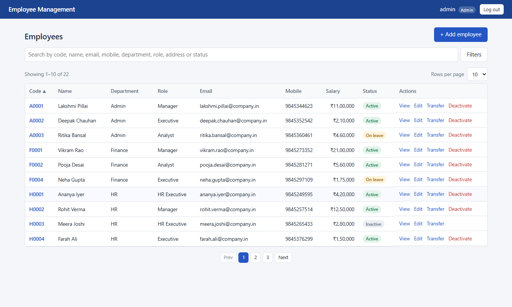
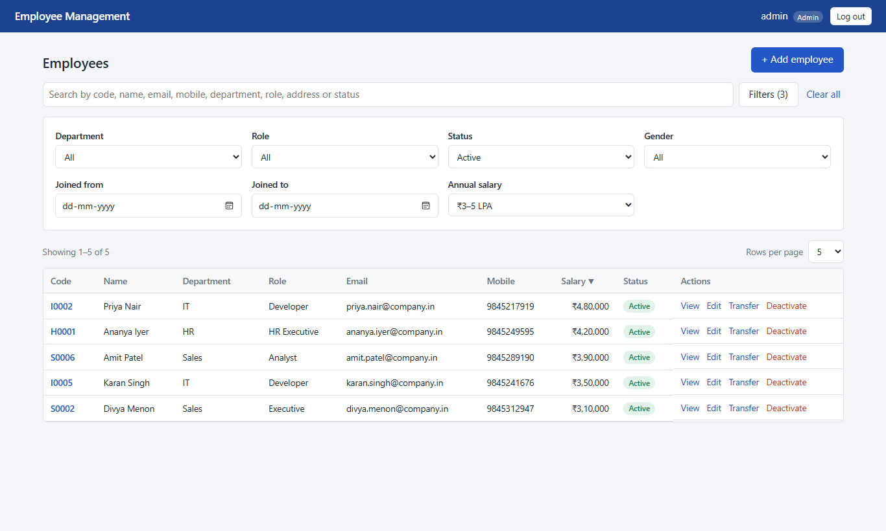
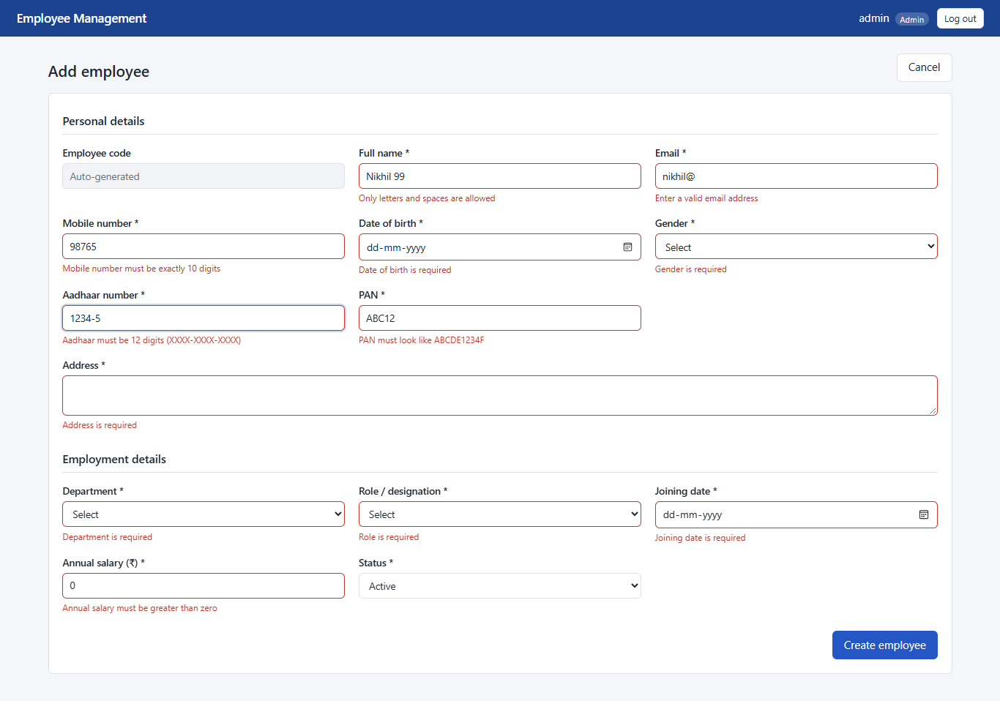
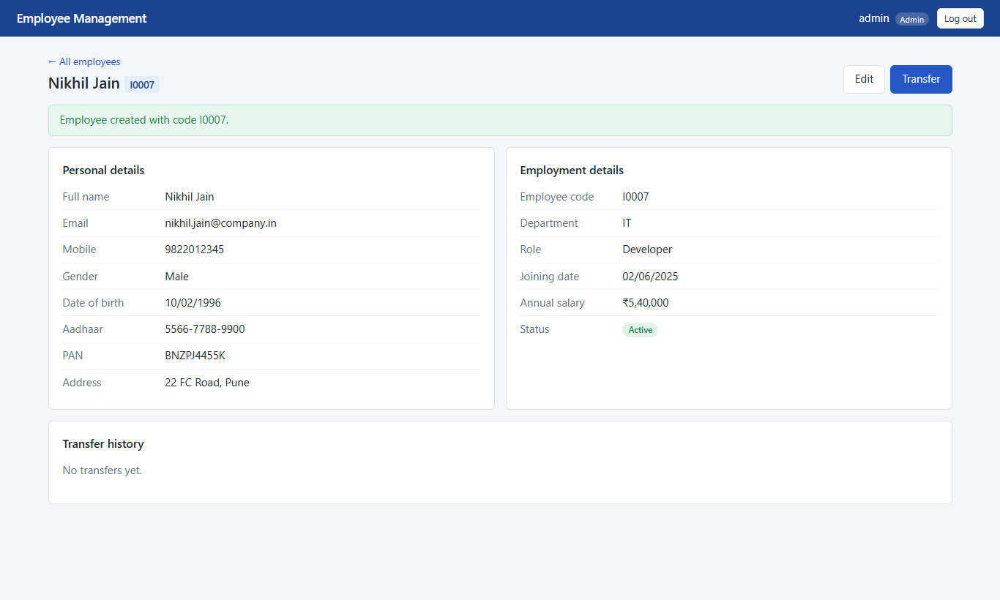
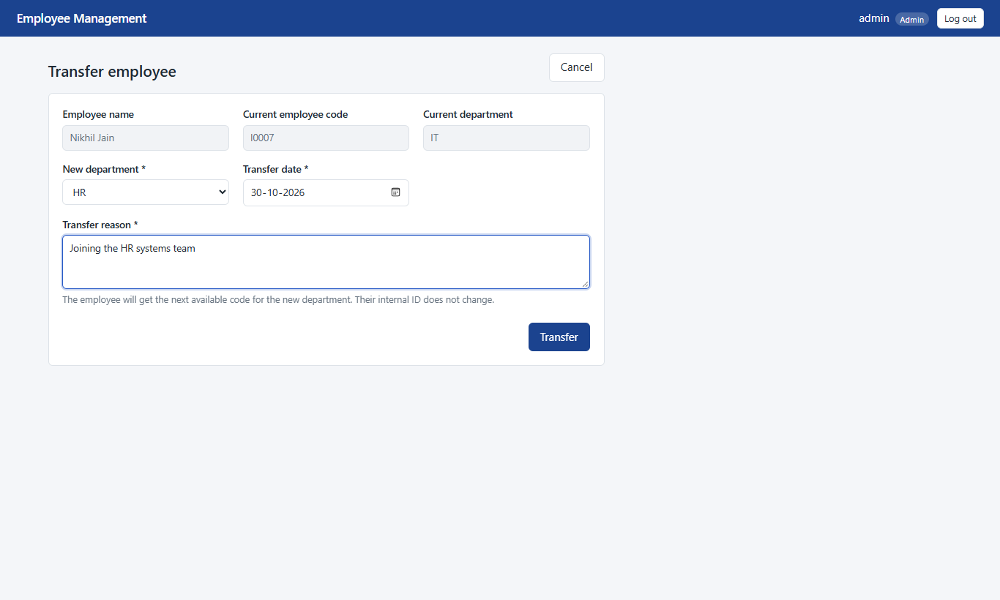
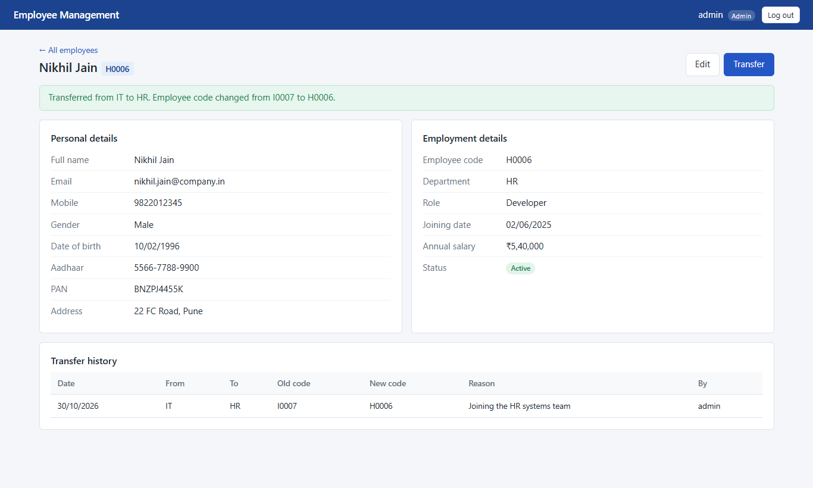
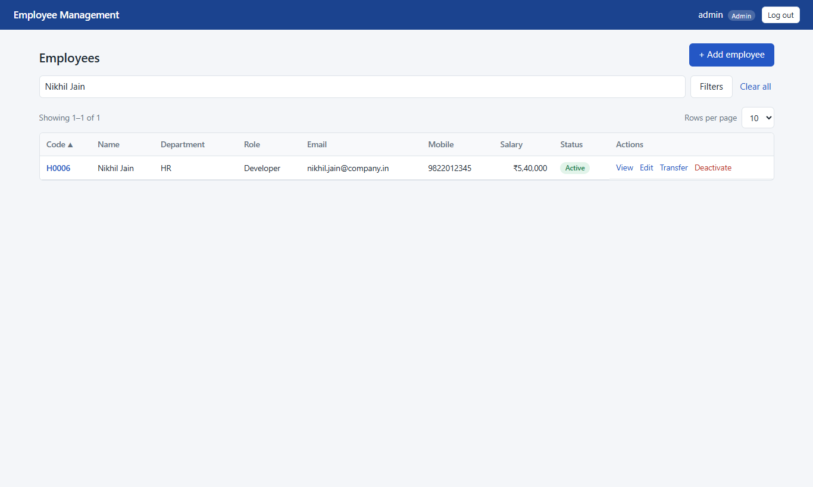
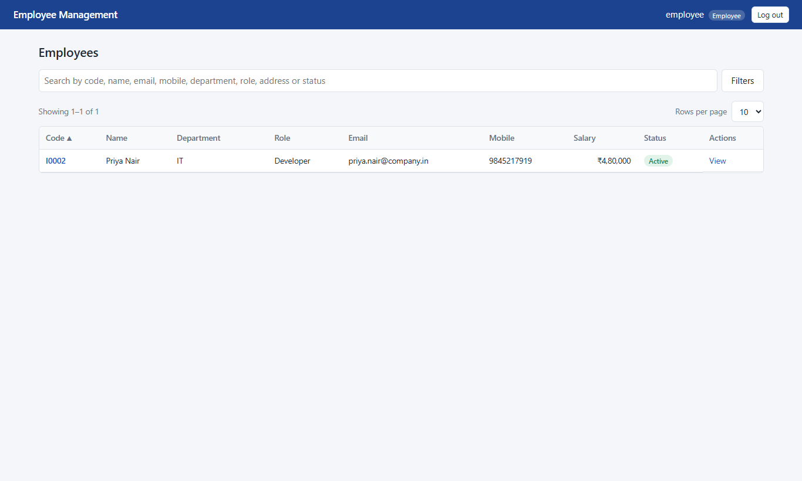
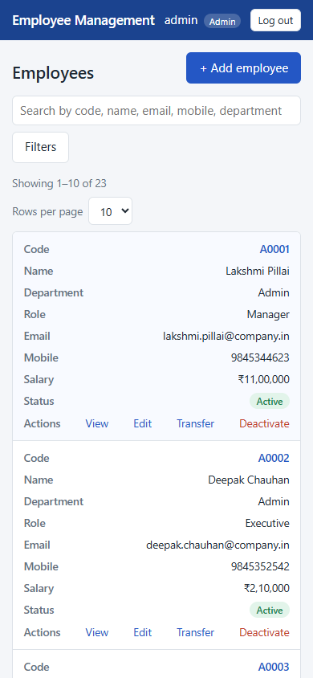
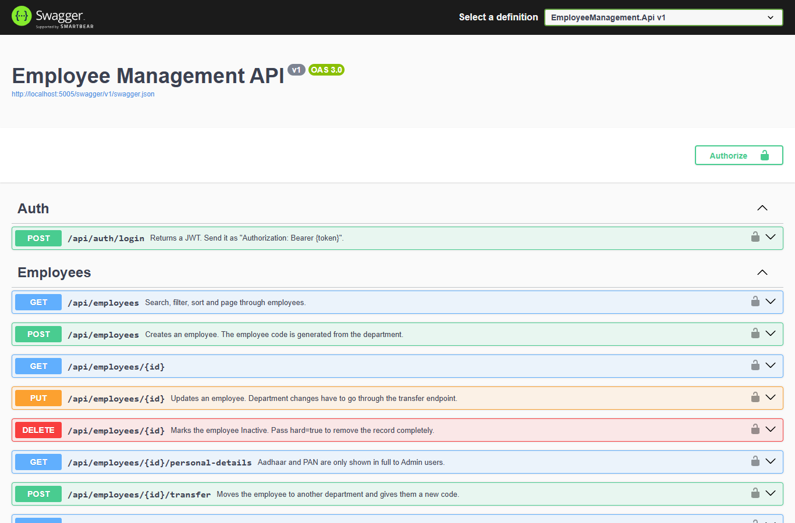

| Name | Adarsh Singh |
| adarshx68@gmail.com | |
| Date | 30 October 2026 |
| Stack | React 19 + Vite, ASP.NET Core 8 Web API, SQL Server 2022 Express |
| GitHub | https://github.com/Adarsh041-arch/EMPLOYEE_MANAGEMENT_SYSTEM |
The application lets a company manage its employees. Admins and managers can register employees, edit them, transfer them between departments and deactivate them. Every employee gets a code based on their department (for example I0001 for the first IT employee). When someone is transferred, they get the next free code in the new department, while their internal ID stays the same and the move is recorded in a transfer history.
The employee list supports a global search, six filters, sorting on every column and pagination with 5, 10 or 20 rows. All of this runs on the server, so it works the same however many employees there are. Everything in the brief is implemented: Task A (frontend), Task B (REST API) and Task C (database).
| Layer | Technology | Why |
|---|---|---|
| Frontend | React 19, Vite 6, React Router 6, react-hook-form + zod, axios, plain CSS | Small and fast to build. zod lets the form use the same rules as the backend. |
| Backend | ASP.NET Core 8 Web API, EF Core 8, FluentValidation, JWT Bearer, Swashbuckle | 8.0 is the current LTS. EF Core migrations give a repeatable schema. |
| Database | SQL Server 2022 Express | Free, and it supports the transaction isolation and row locking the code generator needs. |
| Testing | xUnit + WebApplicationFactory, Vitest | The API tests run against a real SQL Server database, not an in-memory fake. |
The API has three layers. Controllers deal only with HTTP (routes, roles, status codes). Services hold the business rules: code generation, transfers, masking and query building. EF Core does the data access. Validation runs before a controller is called (FluentValidation), and one middleware turns every error into a ProblemDetails response with the correct status code, so the controllers contain no try/catch blocks.
In development, Vite forwards /api to the API, so the browser sees a single origin. CORS is also set up for http://localhost:5173.
EmployeeCode, Email, department name and prefix, role name and username.The schema is created by the EF Core migration (backend/EmployeeManagement.Api/Migrations). The same thing is available as a plain script in database/schema.sql. Sample data is in database/seed.sql: 5 departments, 5 roles, 22 employees spread over every department, role, salary band and status, 3 users and 4 transfer history rows. I checked that both scripts run on an empty database.
Each department has one row in EmployeeCodeSequences. To get the next code, the service runs this statement inside the transaction that creates the employee:
UPDATE EmployeeCodeSequences WITH (ROWLOCK) SET LastNumber = LastNumber + 1 OUTPUT inserted.LastNumber WHERE DepartmentId = @departmentId
The update holds an exclusive lock on that department's row until the transaction commits. A second request for the same department waits, then sees the new number, so no two employees can get the same code. Departments don't block each other. The final code is the prefix plus four digits (F0004). The unique index on EmployeeCode is a final safety net. One test fires 10 create requests in parallel for one department and checks that all 10 codes are different.
Id stays the same.Example from the sample data: Rahul Sharma joined IT as I0001 and was transferred to HR, so his code became the next free HR code (H0005). The history table shows both codes.
| Method | Endpoint | Roles | Description |
|---|---|---|---|
| POST | /api/auth/login | public | Returns a JWT (8 hours) with the role and employee id |
| GET | /api/employees | all | Search, filter, sort, page. Employee role only gets their own record |
| GET | /api/employees/{id} | all | Full details, including personal details |
| GET | /api/employees/{id}/personal-details | all | Aadhaar/PAN masked unless Admin |
| POST | /api/employees | Admin, Manager | Create; returns 201 with the generated code |
| PUT | /api/employees/{id} | Admin, Manager | Update; blank Aadhaar/PAN keeps the stored values |
| DELETE | /api/employees/{id} | Admin | Deactivate; ?hard=true deletes permanently if there is no transfer history (otherwise 409) |
| POST | /api/employees/{id}/transfer | Admin, Manager | Transfer to another department |
| GET | /api/employees/{id}/transfers | all | Transfer history |
| GET | /api/departments, /api/roles | all | Dropdown data |
List parameters: search, departmentId, roleId, status, gender, joiningFrom, joiningTo, minSalary, maxSalary, sortBy, sortDir, pageNumber, pageSize. The response is { items, totalCount, pageNumber, pageSize, totalPages }. Sorting is only allowed on whitelisted columns, with the Id as a tie-breaker so paging is stable.
Status codes: 200/201/204 on success; 400 for validation errors (with a per-field errors object); 401 for a missing or invalid token or wrong login; 403 when the role isn't allowed; 404 for an unknown employee; 409 for a duplicate email or code; 500 for anything unexpected (logged, with a generic message returned).
Documentation: Swagger UI at /swagger (with an "Authorize" button for the token), docs/swagger.json, and a Postman collection at docs/EmployeeManagement.postman_collection.json. Its login request saves the token automatically.
The same rules are checked in the browser (zod) and on the server (FluentValidation), so the API is safe even when it's called directly.
| Field | Rule |
|---|---|
| Full name | Required, letters and spaces only, max 100 |
| Required, valid format, unique (409 if taken; stored in lower case) | |
| Mobile | Exactly 10 digits |
| Aadhaar | Exactly 12 digits; the form formats it as XXXX-XXXX-XXXX while typing; dashes or spaces are accepted by the API |
| PAN | ^[A-Z]{5}[0-9]{4}[A-Z]$ (ABCDE1234F); the form changes it to upper case while typing |
| Date of birth | Required, not in the future, at least 18 years old, not before 1900 |
| Gender / Status | Required, must be one of the allowed values |
| Department / Role | Required, must exist |
| Joining date | Required, after the date of birth, at most one year from today |
| Address | Required, max 300 |
| Annual salary | Greater than zero |
| Transfer | New department, date and reason required; new department must differ from the current one; transfer date can't be before the joining date |
| List query | pageSize 5/10/20, pageNumber ≥ 1, minSalary ≤ maxSalary, known sortBy/sortDir |
XXXX-XXXX-1234 / ABXXXXX34F. The global search does not include Aadhaar or PAN at all.SqlQuery becomes a parameterised query).appsettings.Development.json, which is git-ignored. The connection string uses Windows authentication, so the repository and ZIP contain no passwords.The frontend has five screens. Search, filters, sorting, page size and page number are all stored in the URL. They combine with each other, survive a page refresh, and the browser back button works as expected. Search waits until the user stops typing (400 ms). Buttons the current role can't use are hidden. On phones, the table switches to a stacked card layout.










cd backend && dotnet test). 35 are unit tests for the validators and the encryption/masking helper. 33 are API tests that start the real API in memory against a separate SQL Server database (EmployeeManagement_Test, re-created on each run). They cover code generation, 10 parallel creates in one department, transfers (new code, same Id, history row, same-department rejection, two parallel transfers of one employee, transfer date before joining), duplicate email (409), validation errors (400), unknown id (404), role restrictions (401/403), masking, search fields (including the check that Aadhaar/PAN are not searched), filter combinations, paging consistency and sorting.cd frontend && npm test) for the zod form rules (including the date checks and local-time "today"), Aadhaar formatting and the salary presets.cd backend/EmployeeManagement.Api and copy appsettings.example.json to appsettings.Development.json (it contains sample keys)..\SQLEXPRESS, change the connection string in appsettings.json.cd backend, dotnet restore, then dotnet run --project EmployeeManagement.Api --launch-profile http. On first run this creates the database and loads the sample data. The API is at http://localhost:5005/swagger.cd frontend, npm ci, then npm run dev, and open http://localhost:5173.admin / Admin@123, manager / Manager@123 or employee / Employee@123.Alternatively, run database/schema.sql and then database/seed.sql on an empty database. The README covers both options in more detail.
| Backend NuGet package | Version |
|---|---|
| Microsoft.EntityFrameworkCore.SqlServer | 8.0.11 |
| Microsoft.EntityFrameworkCore.Design | 8.0.11 |
| Microsoft.AspNetCore.Authentication.JwtBearer | 8.0.11 |
| Swashbuckle.AspNetCore | 6.6.2 |
| FluentValidation.AspNetCore | 11.3.0 |
| BCrypt.Net-Next | 4.0.3 |
| Tests: xunit / xunit.runner.visualstudio / Microsoft.NET.Test.Sdk / Microsoft.AspNetCore.Mvc.Testing / coverlet.collector | 2.5.3 / 2.5.3 / 17.8.0 / 8.0.11 / 6.0.0 |
| Tool: dotnet-ef | 8.0.11 |
| Frontend npm package | Version |
|---|---|
| react, react-dom | 19.3.1 |
| react-router-dom | 6.28.0 |
| axios | 1.7.9 |
| react-hook-form / @hookform/resolvers / zod | 7.54.2 / 3.9.1 / 3.24.1 |
| Dev: vite / @vitejs/plugin-react / vitest / eslint | 6.4.5 / 4.7.0 / 2.1.8 / 9.39.5 |
Restore with dotnet restore and dotnet tool restore (nuget.org, configured in nuget.config) and npm ci (exact versions from package-lock.json).